Roteiro para quem vai testar a tela Perfil (menu Administração) na versão nova. Use o ambiente de teste da versão nova; o sistema entregue só entra se um resultado parecer estranho.
Antes de começar
- Usuário com o perfil
0.T.TESTE_ADMIN(ex.:t.admin). - Cadastros de perfil de teste começam por
0.T.. - Todo registro novo começa com
T.(se o ponto falhar, useT-e anote o campo). - Dados de teste ficam no ambiente: não apague o que não criou.
Passos
| # | O que fazer | O que deve aparecer | Caso do plano |
|---|---|---|---|
| 1 | Abrir Administração > Perfil. Pesquisar por parte do nome, com e sem acento. | Lista abre. Anote se "negocios" acha "NEGÓCIOS". | RG-PRI-030 |
| 2 | Incluir sem preencher nada e salvar. | "Preencha os campos obrigatórios antes de salvar." | RG-PRI-031 |
| 3 | Incluir só com a descrição 0.T.PERFIL TESTE. |
Pede confirmação, grava, aparece na lista. | RG-PRI-031 |
| 4 | Abrir o perfil, marcar e desmarcar funções, salvar e reabrir. | As funções voltam como marcadas. | RG-PRI-032 |
| 6 | Alterar nome e situação. | Anote se pede justificativa. | RG-PRI-034 |
| 7 | Inativar o perfil e abrir a lista de perfis da Conta usuário. | Some da lista de ativos; confira se a caixa mostra todos os perfis ou só 10. | RG-PRI-035 |
| 8 | Procurar um botão Excluir na lista. | Não existe; anote. | RG-PRI-036 |
| 9 | Abrir as abas da tela (uma por módulo) e conferir as funções de cada uma. | Há uma aba por módulo, de Principal a Rastreabilidade. | DV-GQ-N-008 |
Capturas de tela da versão nova
Imagens da rodada de testes de 17/10/2026, na ordem dos passos. Clique para ampliar.
Passo 1
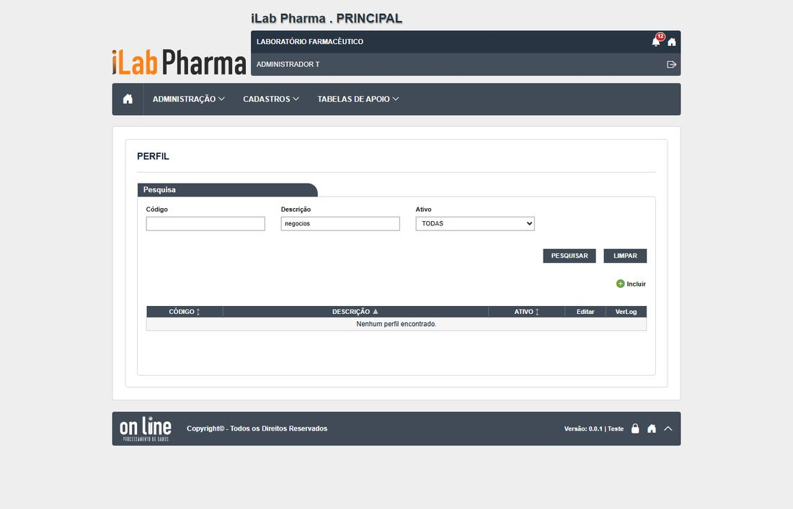
Passo 2
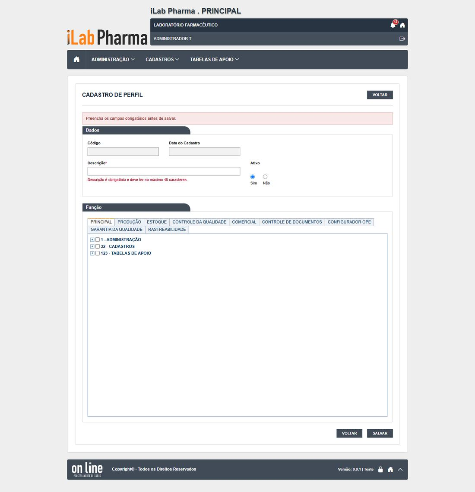
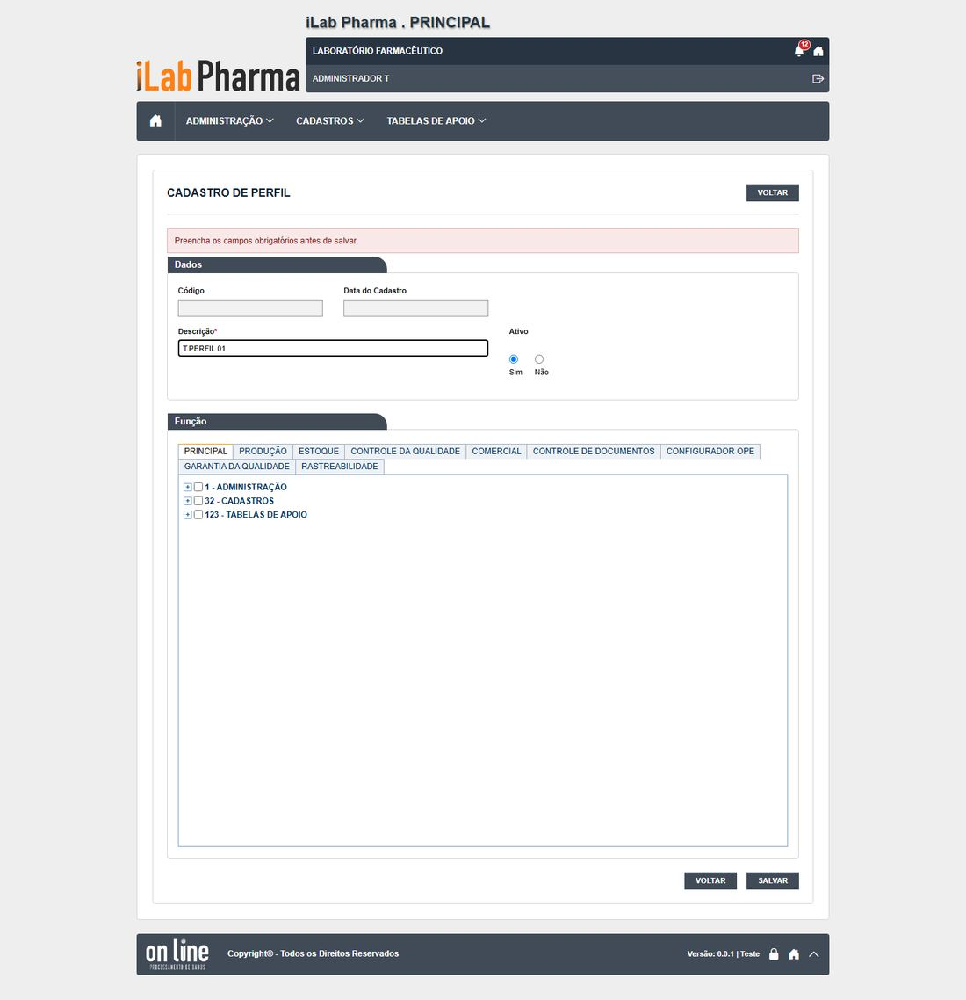
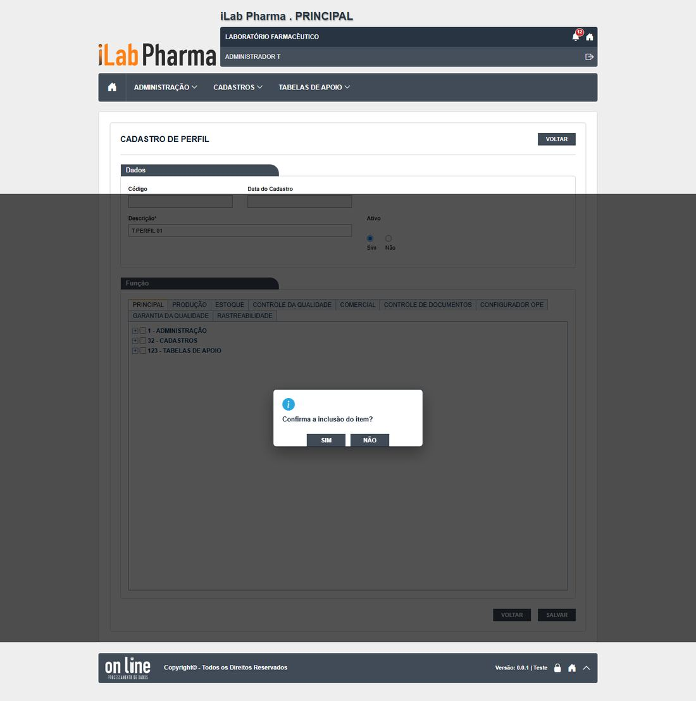
Passo 3
Passo 4
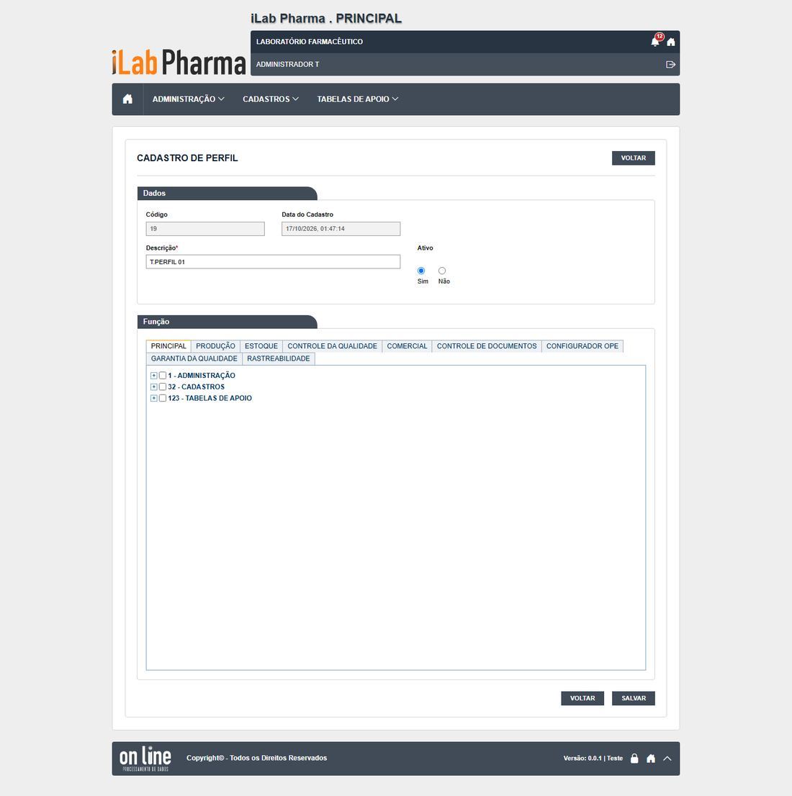
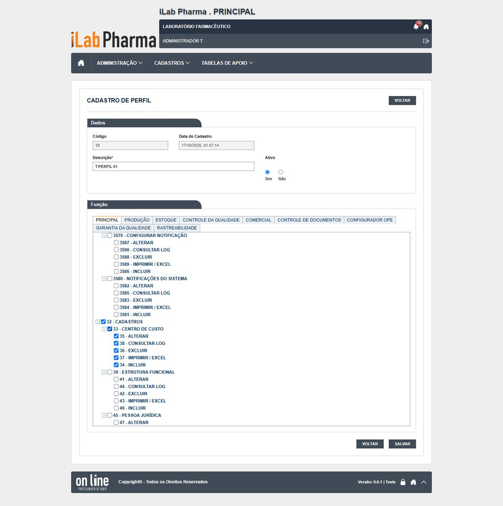
Passo 5
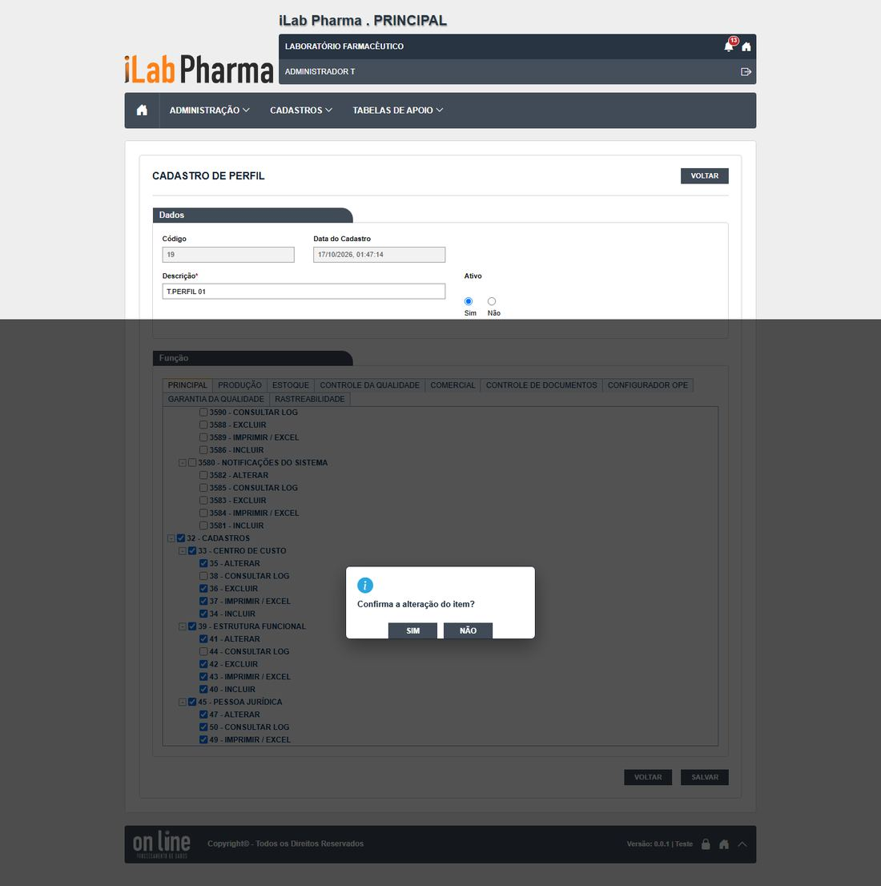
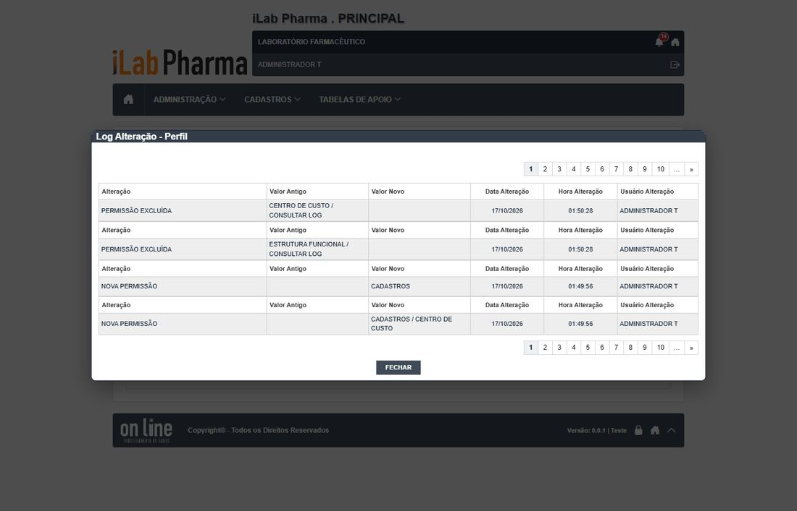
Passo 7
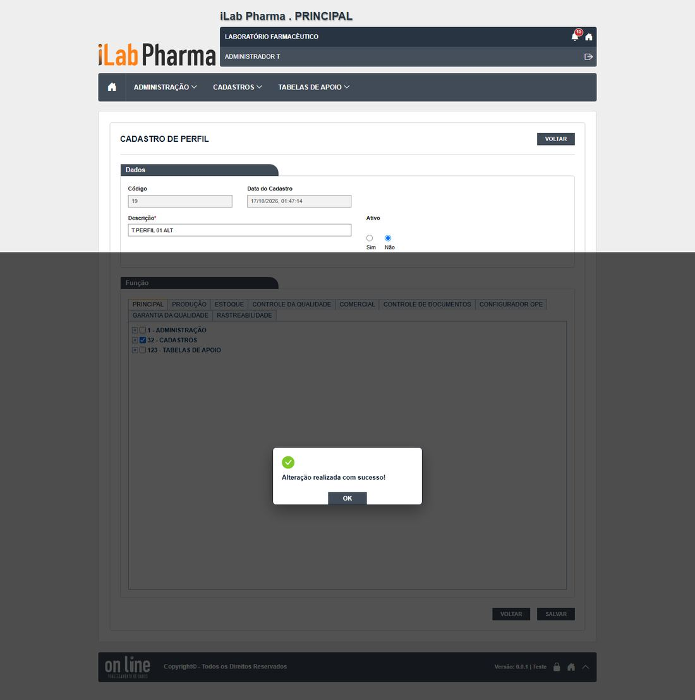
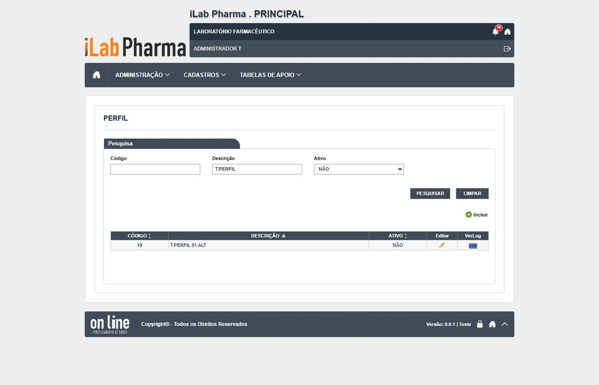
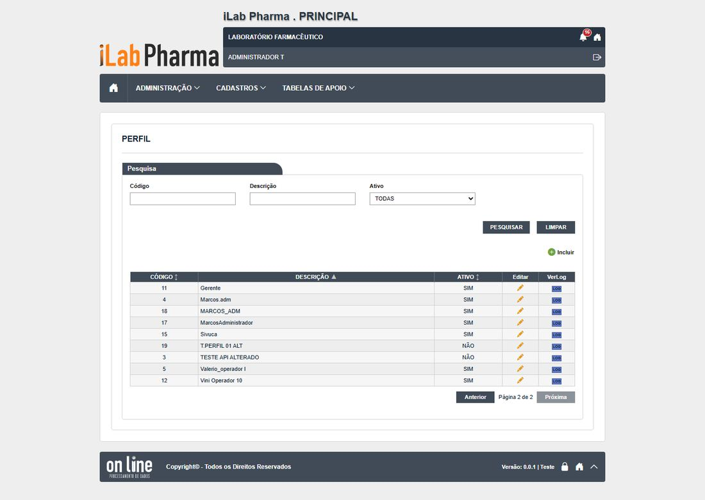
Passo 8
Como registrar
Para cada passo anote: o que apareceu na tela (copie a mensagem), a classe (Igual, Regressão, Melhoria, Novo ou Bloqueado), o defeito (se houver) e o nome da captura. Se um caso ficou Bloqueado, diga o motivo (usuário, perfil ou dado que faltou).
Se algo parecer uma falha de permissão, confira primeiro a Conta usuário e o Perfil do usuário antes de concluir que a tela falhou.
Tabela de resultados
A coluna Resultado do caso em 17/10/2026 traz o que a tela mostrou, para o caso do plano que o passo cobre (passos do mesmo caso repetem o resultado). Refaça o passo e use a última coluna para o seu resultado: se for diferente, anote a classe (Igual, Regressão, Melhoria, Novo ou Bloqueado) e o defeito.
| Passo | Resultado do caso em 17/10/2026 | Classe | Defeito | Captura | Seu resultado |
|---|---|---|---|---|---|
| 1 | Caixa é ignorada, acento não: "negocios" não acha, "negócios" acha | Igual | DV-PRI-N-009 | RG-PRI-030-passo-1-sem-acento, RG-PRI-030-passo-2-com-acento |
|
| 2 | Vazio: "Preencha os campos obrigatórios antes de salvar." Só com a descrição: confirma e grava | Igual | — | RG-PRI-031-passo-1-salvar-vazio, RG-PRI-031-passo-2-preenchido |
|
| 3 | Vazio: "Preencha os campos obrigatórios antes de salvar." Só com a descrição: confirma e grava | Igual | — | RG-PRI-031-passo-1-salvar-vazio, RG-PRI-031-passo-2-preenchido |
|
| 4 | As funções marcadas voltam iguais | Igual | — | RG-PRI-032-passo-1-arvore-expandida, RG-PRI-032-passo-2-marcou-centro-custo |
|
| 5 | Confirmação sem justificativa; histórico com data, hora e usuário | Igual | DV-PRI-024 | RG-PRI-033-passo-1-confirmacao-sem-justificativa, RG-PRI-033-passo-2-apos-salvar |
|
| 6 | Grava sem pedir justificativa | Igual | DV-PRI-024 | — | |
| 7 | Sai da lista de ativos; aparece em "NÃO". A Conta usuário mostra só 10 perfis | Novo | DV-PRI-N-006 | RG-PRI-035-passo-1-inativado, RG-PRI-035-passo-2-lista-inativos |
|
| 8 | A lista não tem Excluir; a chamada de exclusão é recusada (405) | Novo | — | RG-PRI-036-passo-1-lista-perfis-admin |
|
| 9 |